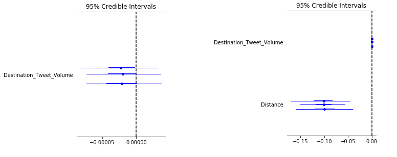

class: center, middle background-color: white .title[Forced Migration & Big Data:] .subtitle[Identifying Indirect Signals in Social Media Data] .author[Laila A. Wahedi, PhD] .date[August 28, 2018] .institution[MDI, McCourt School of Public Policy, Georgetown University] <img style="width:20%" src="../figures/seal.png"> .center[] .footnote[Created with [{Remark.js}](http://remarkjs.com/) using [{Markdown}](https://daringfireball.net/projects/markdown/) + [{MathJax}](https://www.mathjax.org/) + [{Liminal}](http://www.jmlilly.net/liminal.zip)] --- class: center background-color:#AF002B .footnote[ Laila A. Wahedi -- Follow along at Wahedi.US, under Current Presentation -- law98@georgetown.edu] <h2 style="text-transform: none; color:white; text-align:left; margin-bottom:0px">Faced with disaster, some families flee while others stay</h2> <img class="plain" src="../figures/line.png" style="float:left; padding:0;margins:0;margin-bottom:0px; align:left; height: 5px; width:75%"> <div style="width:49%; float:left"> <h3 style="color:white;"><br><u>When</u> do they choose to flee?</h3> </div> <div style="width:49%; float:left"> <img style="max-width:50%" src="../figures/migration/address.png"> <h3 style="color:white;"><br><u>Where</u> do they choose to go?</h3> </div> --- class: center background-color:#01BAEF .footnote[ Laila A. Wahedi -- Follow along at Wahedi.US, under Current Presentation -- law98@georgetown.edu] <h2 style="text-transform: none; color:white; margin-bottom:0px; text-align:left; ">Important to understand because: </h2> <img class="plain" src="../figures/line.png" style="padding:0;margins:0;margin-bottom:0px; float:left; height: 5px; width:75%"> <div style="width:32%; float:left"> <h3 style = "color:white; ">Science</h3> </div> <div style="width:32%; float:left"> <img style="width:75%" src="../figures/migration/aid.png"> <h3 style = "color:white; ">Allocate Finite Aid</h3> </div> <div style="width:32%; float:left"> <h3 style = "color:white; ">Proactive Policy</h3> </div> --- class: center background-color:#AF002B .footnote[ Laila A. Wahedi -- Follow along at Wahedi.US, under Current Presentation -- law98@georgetown.edu] <h2 style="text-transform: none; color:white; text-align:left; margin-bottom:0px">We have some ideas</h2> <img class="plain" src="../figures/line.png" style="float:left; padding:0;margins:0;margin-bottom:0px; align:left; height: 5px; width:75%"> --- class: center background-color:#01BAEF .footnote[ Laila A. Wahedi -- Follow along at Wahedi.US, under Current Presentation -- law98@georgetown.edu] <h2 style="text-transform: none; color:white; text-align:left; margin-bottom:0px">Problem: Data Availability in Disaster Areas</h2> <img class="plain" src="../figures/line.png" style="float:left; padding:0;margins:0;margin-bottom:0px; align:left; height: 5px; width:75%"> <div style="width:32%; float:left"> <h3 style="color:white;"><br><u>Time Resolution</h3> </div> <div style="width:32%; float:left"> <h3 style="color:white;"><br><u>Spatial Resolution</h3> </div> <div style="width:32%; float:left"> <h3 style="color:white;"><br><u>Time Delay</h3> </div> <div style="width:100%;float:left"> <h1 style="text-transform: none; color:white; text-align:center; margin-bottom:0px">Low Resolution Theories</h1> </div> --- class: center background-color:#AF002B .footnote[ Laila A. Wahedi -- Follow along at Wahedi.US, under Current Presentation -- law98@georgetown.edu] <h2 style="text-transform: none; color:white; text-align:left; margin-bottom:0px">Case: Iraqi Civil War, Battle of Mosul</h2> <img class="plain" src="../figures/line.png" style="float:left; padding:0;margins:0;margin-bottom:0px; align:left; height: 5px; width:75%"> --- class: center background-color:#01BAEF .footnote[ Laila A. Wahedi -- Follow along at Wahedi.US, under Current Presentation -- law98@georgetown.edu] <h2 style="text-transform: none; color:white; text-align:left; margin-bottom:0px">Solution: Social Media signals as <u>indirect</u> indicators of critical factors</h2> <img class="plain" src="../figures/line.png" style="float:left; padding:0;margins:0;margin-bottom:0px; align:left; height: 5px; width:75%"> <div style="width:49%; float:left"> <h3 style="color:white;"><br>When <u>specifically</u> do they choose to flee?</h3> </div> <div style="width:49%; float:left"> <img style="max-width:50%" src="../figures/migration/address.png"> <h3 style="color:white;"><br>Where <u>specifically</u> do they choose to go?</h3> </div> --- class: center background-color:#01BAEF .footnote[ Laila A. Wahedi -- Follow along at Wahedi.US, under Current Presentation -- law98@georgetown.edu] <h2 style="text-transform: none; color:white; text-align:left; margin-bottom:0px">Value of Social Media Data</h2> <img class="plain" src="../figures/line.png" style="float:left; padding:0;margins:0;margin-bottom:0px; align:left; height: 5px; width:75%"> <div style="width:32%; float:left"> <h3 style="color:white;"><br><u>Mirrors info available to families</h3> </div> <div style="width:32%; float:left"> <h3 style="color:white;"><br><u>Available real-time</h3> </div> <div style="width:32%; float:left"> <h3 style="color:white;"><br><u>Validated against historical data</h3> </div> --- class: center background-color:#01BAEF .footnote[ Laila A. Wahedi -- Follow along at Wahedi.US, under Current Presentation -- law98@georgetown.edu] <h2 style="text-transform: none; color:white; text-align:left; margin-bottom:0px">Social Media Signals</h2> <img class="plain" src="../figures/line.png" style="float:left; padding:0;margins:0;margin-bottom:0px; align:left; height: 5px; width:75%"> <br> <h2 style="text-transform: none; color:white; text-align:left; margin-bottom:0px">Hundreds of English and Arabic hashtags and search-terms since 2014</h2> <br> <div style="width:24%; float:left"> <h3 style="color:white;"><br><u>Volume</h3> </div> <div style="width:24%; float:left"> <h3 style="color:white;"><br><u>Sentiment</h3> </div> <div style="width:24%; float:left"> <h3 style="color:white;"><br><u>Stance</h3> </div> <div style="width:24%; float:left"> <h3 style="color:white;"><br><u>Events</h3> </div> --- class: center background-color:#01BAEF .footnote[ Laila A. Wahedi -- Follow along at Wahedi.US, under Current Presentation -- law98@georgetown.edu] <h2 style="text-transform: none; color:white; text-align:left; margin-bottom:0px">Modeling Challenges</h2> <img class="plain" src="../figures/line.png" style="float:left; padding:0;margins:0;margin-bottom:0px; align:left; height: 5px; width:75%"> <br> <div style="width:49%; float:left"> <h3 style="color:white;"><br><u>Noisy Data</h3> </div> <div style="width:49%; float:left"> <h3 style="color:white;"><br><u>Poor Data Environment</h3> </div> --- class: center background-color:#AF002B .footnote[ Laila A. Wahedi -- Follow along at Wahedi.US, under Current Presentation -- law98@georgetown.edu] <h2 style="text-transform: none; color:white; text-align:left; margin-bottom:0px">Understand the Signals</h2> <img class="plain" src="../figures/line.png" style="float:left; padding:0;margins:0;margin-bottom:0px; align:left; height: 5px; width:75%"> <h2 style="text-transform: none; color:white; text-align:left; margin-bottom:0px">Noisy but meaningful</h2> --- class: center background-color:#AF002B .footnote[ Laila A. Wahedi -- Follow along at Wahedi.US, under Current Presentation -- law98@georgetown.edu] <h2 style="text-transform: none; color:white; text-align:left; margin-bottom:0px">Understand the Signals</h2> <img class="plain" src="../figures/line.png" style="float:left; padding:0;margins:0;margin-bottom:0px; align:left; height: 5px; width:75%"> <h2 style="text-transform: none; color:white; text-align:left; margin-bottom:0px">Noisy but meaningful</h2> --- class: center background-color:#01BAEF .footnote[ Laila A. Wahedi -- Follow along at Wahedi.US, under Current Presentation -- law98@georgetown.edu] <h2 style="text-transform: none; color:white; text-align:left; margin-bottom:0px">Solution: Isolate the signal</h2> <img class="plain" src="../figures/line.png" style="float:left; padding:0;margins:0;margin-bottom:0px; align:left; height: 5px; width:75%"> <br> <h2 style="text-transform: none; color:white; text-align:left; margin-bottom:0px">Control for:</h2> <br> <div style="width:32%; float:left"> <h3 style="color:white;"><br><u>Time</h3> </div> <div style="width:32%; float:left"> <h3 style="color:white;"><br><u>Origin Location</h3> </div> <div style="width:32%; float:left"> <h3 style="color:white;"><br><u>Destination Location</h3> </div> --- class: center background-color:#01BAEF .footnote[ Laila A. Wahedi -- Follow along at Wahedi.US, under Current Presentation -- law98@georgetown.edu] <h2 style="text-transform: none; color:white; text-align:left; margin-bottom:0px">Hierarchical Bayesian Model</h2> <img class="plain" src="../figures/line.png" style="float:left; padding:0;margins:0;margin-bottom:0px; align:left; height: 5px; width:75%"> <br> --- class: center background-color:#AF002B .footnote[ Laila A. Wahedi -- Follow along at Wahedi.US, under Current Presentation -- law98@georgetown.edu] <h2 style="text-transform: none; color:white; text-align:left; margin-bottom:0px">When Families Flee</h2> <img class="plain" src="../figures/line.png" style="float:left; padding:0;margins:0;margin-bottom:0px; align:left; height: 5px; width:75%"> --- class: center background-color:#AF002B .footnote[ Laila A. Wahedi -- Follow along at Wahedi.US, under Current Presentation -- law98@georgetown.edu] <h2 style="text-transform: none; color:white; text-align:left; margin-bottom:0px">Signals Capture Violence</h2> <img class="plain" src="../figures/line.png" style="float:left; padding:0;margins:0;margin-bottom:0px; align:left; height: 5px; width:75%"> --- class: center background-color:#01BAEF .footnote[ Laila A. Wahedi -- Follow along at Wahedi.US, under Current Presentation -- law98@georgetown.edu] <h2 style="text-transform: none; color:white; text-align:left; margin-bottom:0px">Where they Go</h2> <img class="plain" src="../figures/line.png" style="float:left; padding:0;margins:0;margin-bottom:0px; align:left; height: 5px; width:75%"> <br> --- class: center background-color:#AF002B .footnote[ Laila A. Wahedi -- Follow along at Wahedi.US, under Current Presentation -- law98@georgetown.edu] <h2 style="text-transform: none; color:white; text-align:left; margin-bottom:0px">Where they go</h2> <br> <img class="plain" src="../figures/line.png" style="float:left; padding:0;margins:0;margin-bottom:0px; align:left; height: 5px; width:75%">  --- class: center background-color:#01BAEF .footnote[ Laila A. Wahedi -- Follow along at Wahedi.US, under Current Presentation -- law98@georgetown.edu] <h2 style="text-transform: none; color:white; text-align:left; margin-bottom:0px">Next Steps</h2> <img class="plain" src="../figures/line.png" style="float:left; padding:0;margins:0;margin-bottom:0px; align:left; height: 5px; width:75%"> <ul style="text-align:left;color:white"> <li> Continue to identify social media signals as indirect indicators for substantive factors</li> <br> <li> Integrate into broader models of forced migration</li> <br> <li> Identify high resolution factors across different contexts</li> </ul> <br><br><br><br><br><br> <div style="color:white;">Icons made by or adapted from<strong><a href="http://www.freepik.com" style="color:#e6f3f7;" title="Freepik"> Freepik</a></strong> from <a style="color:#e6f3f7;" href="https://www.flaticon.com/" title="Flaticon">www.flaticon.com</a> is licensed by <a style="color:#e6f3f7;" href="http://creativecommons.org/licenses/by/3.0/" title="Creative Commons BY 3.0" target="_blank">CC 3.0 BY</a></div> --- class: left background-color:#01BAEF .footnote[ Laila A. Wahedi -- Follow along at Wahedi.US, under Current Presentation -- law98@georgetown.edu] <h2 style="text-transform: none; color:white; text-align:left; margin-bottom:0px">Team</h2> <img class="plain" src="../figures/line.png" style="float:left; padding:0;margins:0;margin-bottom:0px; align:left; height: 5px; width:75%"> .left-column[ ### Georgetown * Lisa Singh * Susan Martin * Katharine Donato * Elizabeth Ferris * Rochelle Davis * Laila Wahedi * Abby Taylor * Lara Kinne * Nili Yossinger * Chris Kirov * Yanchen Wang * Zheng Chai * Yuan-Yao Chang * Julie Hockett * Jordan King * Yifang Wei ] .right-column[ ### York * Susan McGrath * Michaela Hynie * Jennifer Hyndman * Alison Mountz * Julie Young * Kim Rygiel * Luann Good Gingrich * Kazi Rahman * Kira Williams * Aijun An * Jianhong Wu * Jimmy Huang * Forouq Khonsari * Sadra Abrishamkar ] --- ---